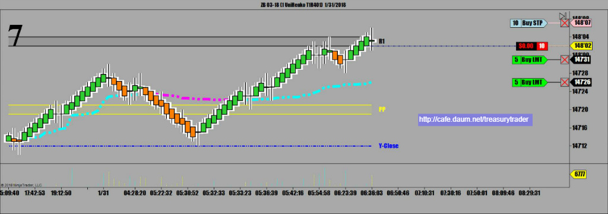
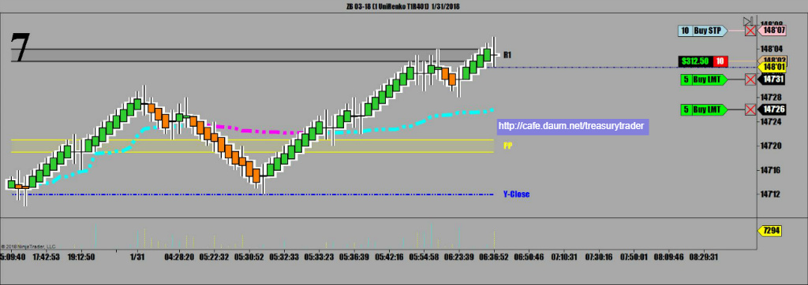
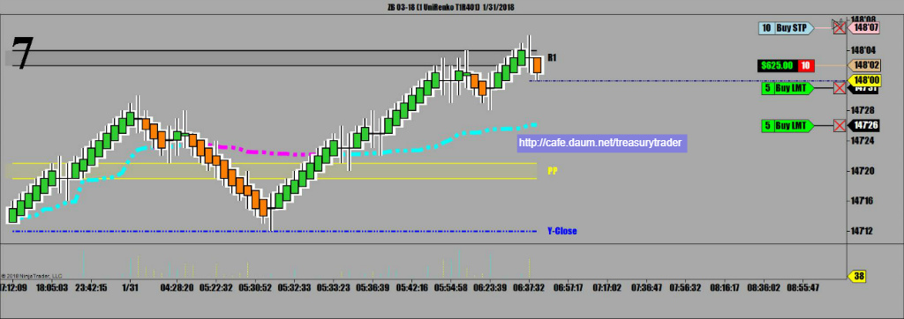
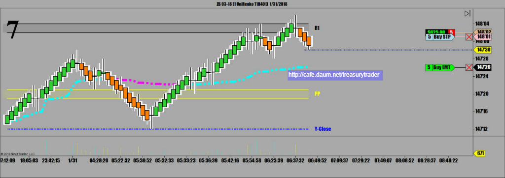
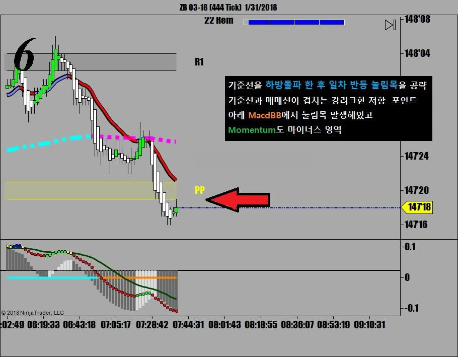
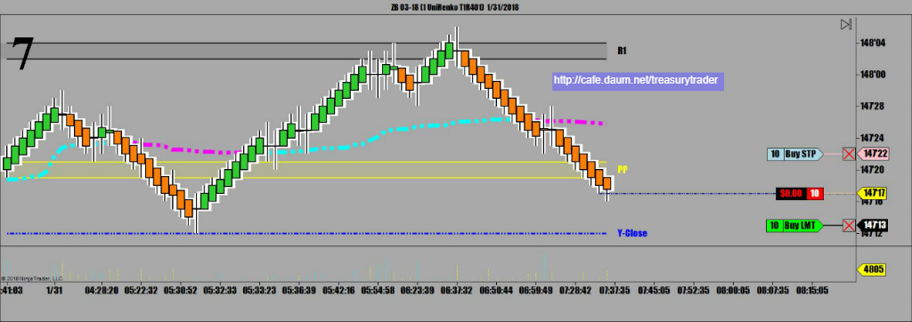
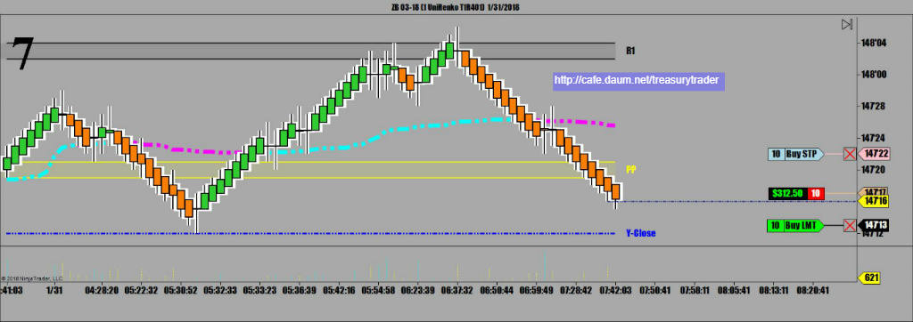
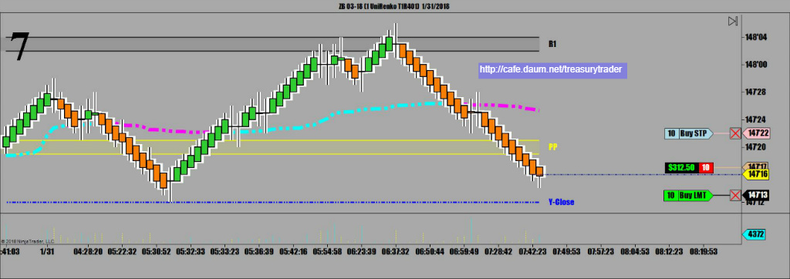
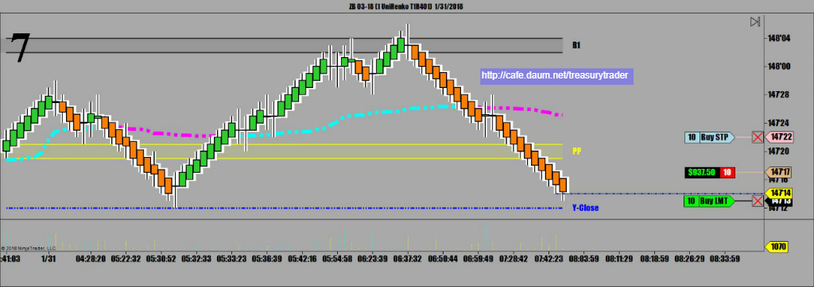
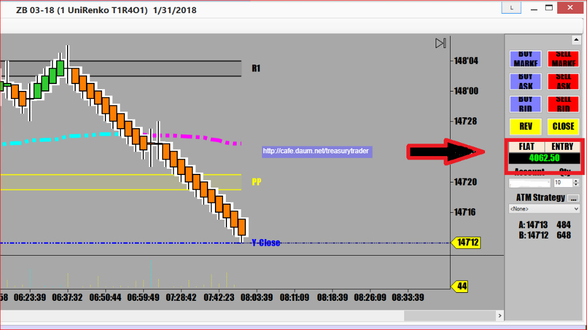

어제 증시가 폭락할 때도 거의 반등하지 못했던 채권시장은 오늘도 오전장에 잠시 반등했지만
오늘 증시가 상승장인 덕분에 하락 압력을 계속 받고 있음
1차매매
 1_31_2018.jpg)
중요한 지지(저항)포인트에서 발생하는 캔들패턴은 큰 의미를 가짐.
진행하던 주가는 주요 지지(저항) 포인트에 다다르면 일단 멈추기 때문에
거기서 만들어지는 패턴을 잘 주목해야 함
(패턴은 힘의 균형을 그림으로 그려주기 때문에 내제된 에너지의 움직임을 이해할 수 있음)
피봇이 만든 지지(저항)은 국채선물매매에서 매우 중요함
이런 피봇상의 지지(저항)에서 발생하는 캔들패턴 특히 추세전환 변곡점 신호는 적줄율이 매우 놓음
 1_31_20182.jpg)
매매씨스템에서도 십자가 출현 매도진입 10 Lot




일차매매는 랜딩 포인트인 기준선에 안착 성공
2차매매
하락하던 주가는 오늘의 메인피봇을 하방돌파한 후 일차반등 눌림목을 만드는 중
기준선과 매매선의 Dead Cross가 발생하는 멋진 순간 . 물론 매도진입

매도진입. 랜딩포인트는 당연히 오늘 저점이면서 어제 마감가
그밑으로는 밀리기 힘들기 때문에 분할청산 없이 한번에 매도주문 냄





오늘 수익 4,062불 50전
오늘매매 세줄요약
1. 피봇저항선에서 Dark cloud cover 캔들패턴 발생하면서 매매챠트 캔들바 색깔전환. 매도공략
2. 메인피봇 하방돌파후 일차 눌림목 매도공략
3. 2전2승